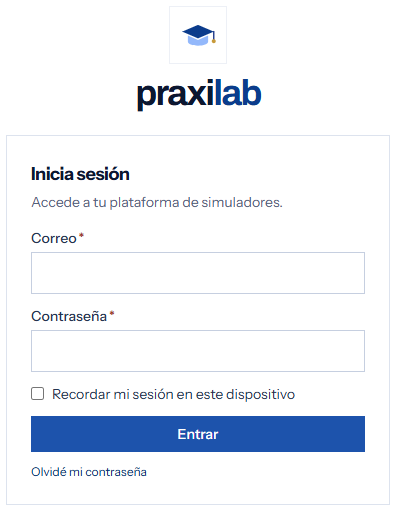
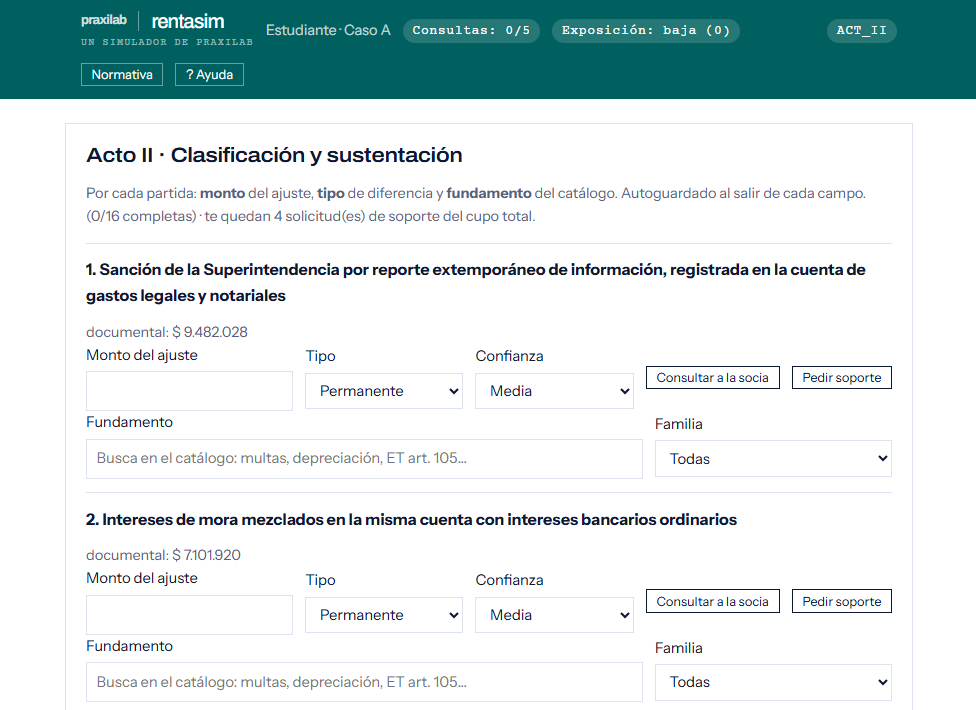
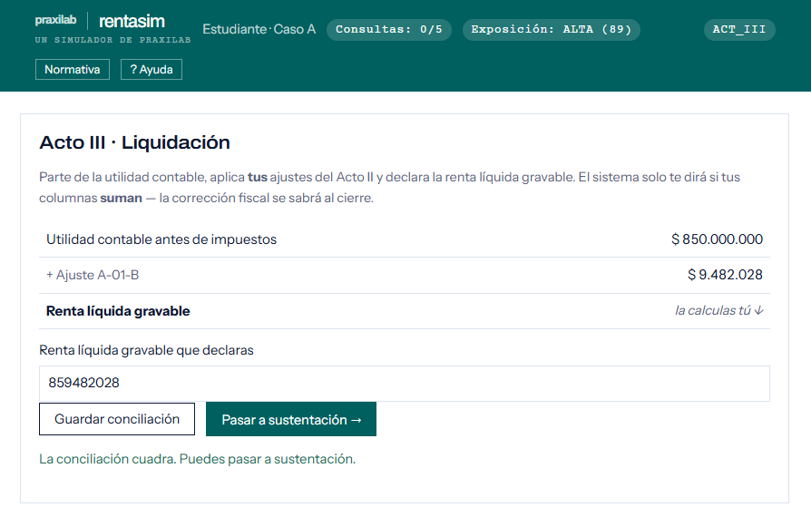
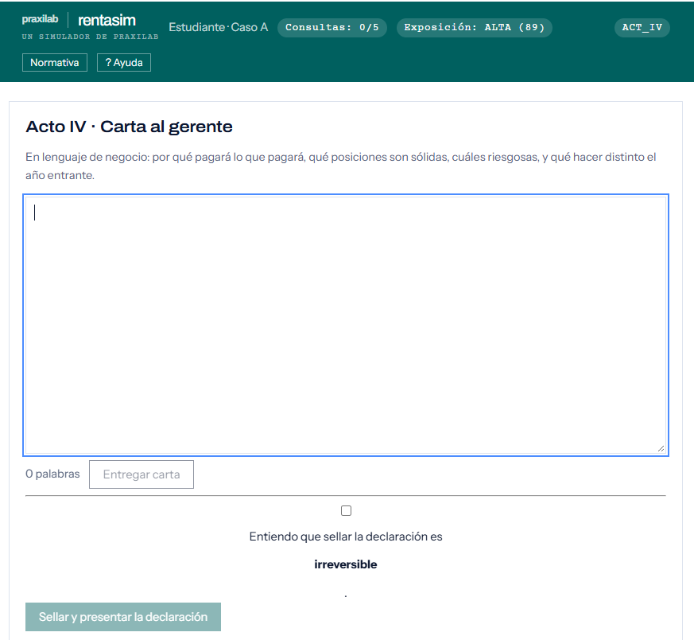

Del balance a la declaración.
Presentación para docentes
Del balance a la declaración
RentaSim es el simulador de PraxiLab que lleva al aula el trabajo real de una firma de asesoría tributaria. A partir del expediente de un cliente —estados financieros bajo NIIF, notas y soportes—, el estudiante identifica las diferencias entre la contabilidad y lo fiscal, las clasifica, las sustenta frente al Estatuto Tributario y llega hasta la declaración de renta. Un motor determinista evalúa cada decisión y cada estudiante resuelve una variante distinta del caso.
Pregrado en Contaduría Pública. Cursos de tributaria.
Individual. Cada estudiante trabaja su propio encargo.
15 a 20 horas de trabajo autónomo, en varias sesiones.
Año gravable 2025 y Estatuto Tributario vigente al firmar.
El estudiante deja de ser alumno y entra a trabajar como analista junior de una firma de asesoría tributaria, en plena temporada de cierre. La socia le asigna un cliente: recibe estados financieros bajo NIIF, notas y un expediente documental, y debe producir la conciliación fiscal y la declaración de renta, sustentando cada ajuste como lo haría ante un revisor real.
El encargo avanza en cuatro actos, y cada uno le exige un producto concreto:
Lee cada partida con ojo crítico, marca las sospechosas, pide los soportes que faltan y entrega un memorando de riesgos.
En cada partida decide el monto, el tipo de diferencia y la norma que la respalda, y declara su confianza.
Parte de la utilidad contable, suma sus ajustes y calcula él mismo la renta líquida gravable: el sistema no le da el total.
Escribe una carta al gerente en lenguaje de negocio y sella la declaración, un paso irreversible.
Al cierre ve cuántas de sus decisiones eran correctas y por qué: la experiencia de su primer encargo en una firma, sin el costo de equivocarse con un cliente real.
| Caso | Empresa | Utilidad → renta | Lo que enseña | Estado |
|---|---|---|---|---|
| A | Manufactura pyme | $850 M → $1.030 M | 12 diferencias clásicas del cierre, todas suman, + 4 señuelos (16 partidas) | Jugable |
| B | Servicios de TI | $700 M → $850 M | Los signos importan: aparecen las primeras deducciones | Jugable |
| C | Agroindustria | $520 M → $625 M | Juicio bajo ambigüedad: 4 de 12 partidas son de criterio | Jugable |
Los casos B y C tienen 12 partidas cada uno; el caso A suma 16 — sus 12 ajustes reales más 4 señuelos. Ninguno asume haber cursado otro. El caso se puede fijar para todo el recurso o repartir por estudiante en PraxiLab.
El caso base: una pyme manufacturera cierra el año con una utilidad contable de $850 M. Su expediente reúne 16 partidas: 12 ajustes clásicos de un primer curso tributario —depreciaciones, provisiones, multas— que todas suman a la renta líquida, más 4 señuelos: partidas que parecen sospechosas pero no requieren ajuste, para entrenar el criterio del estudiante desde el Acto I.
Una empresa de servicios de TI, con una utilidad contable de $700 M. Aquí los signos empiezan a importar: no todos los ajustes suman, aparecen las primeras deducciones que restan de la renta líquida. Exige prestar atención a la dirección de cada ajuste, no solo a su existencia.
Una agroindustria con utilidad contable de $520 M, el caso más exigente de los tres. Cuatro de sus doce partidas son de criterio: no tienen una única respuesta correcta y ponen a prueba el juicio profesional del estudiante bajo ambigüedad real, como ocurriría en una firma.
| Interruptor | Rango | Por defecto |
|---|---|---|
| Caso asignado | A, B, C o por estudiante | A |
| Ventana de corrección | Activa/inactiva + % | Activa, 80 % |
| Revisiones de la socia | 0, 1 o 2 | 1 |
| Presupuesto de consultas | 0 a 8 | 5 |
El caso se congela al entrar el primer estudiante; las consultas se pueden subir en marcha.
| El estudiante… | Evidencia | Peso |
|---|---|---|
| Clasifica las diferencias como permanentes o temporarias | Tipo elegido en cada partida | 25 % |
| Sustenta cada ajuste con el fundamento normativo | Norma elegida + memorando | 25 % |
| Elabora la conciliación y liquida hasta renta líquida | Conciliación del Acto III | 35 % |
| Evalúa la exposición fiscal y la comunica a un no experto | Carta al gerente | 15 % |
Qué mira: si cada partida es permanente, temporaria o sin efecto, incluidos los señuelos.
Demuestra: que entiende la naturaleza de cada diferencia, no solo que existe.
Qué mira: la norma elegida del catálogo para cada ajuste y el memorando de riesgos.
Demuestra: que puede defender cada ajuste frente al Estatuto Tributario.
Qué mira: que llegue de la utilidad contable a la renta líquida con los montos y signos correctos.
Demuestra: dominio técnico del cálculo; por eso es el frente de mayor peso.
Qué mira: la carta al gerente, calificada con rúbrica: posiciones sólidas, riesgosas y recomendaciones.
Demuestra: que sabe comunicar la exposición fiscal a quien no es experto.
Cifras, tipos y normas se evalúan con un motor determinista contra un catálogo: la misma respuesta siempre recibe la misma nota. La IA solo lee los textos libres y aporta el 15 % de gestión del riesgo a partir de la carta, con rúbrica y sin decidir cifras ni normas.
El mismo tipo de criterio que mide Saber Pro en Información y Control Contable: sustentar un ajuste, no repetir una definición.
Cada estudiante resuelve una variante distinta, generada por semilla: mismas cifras nunca, mismo rigor siempre.
Cada ajuste queda sustentado con norma y monto. El docente puede revisar el porqué de cada nota, no solo el número.
El estudiante recibe el expediente de un cliente real y debe defender su declaración de renta ante una socia — igual que en su primer año de firma.
De PraxiLab a la primera sesión

Cuatro actos, de la recepción del expediente al sellado
No todas requieren ajuste: el caso A trae 4 partidas sanas. Al cierre ve cuántas de sus marcas eran hallazgos reales.
Puerta de avance: no pasa al Acto II sin las 6 marcas y el memorando.
Lo redacta al final del Acto I, después de revisar el expediente y antes de clasificar las partidas. Imita lo que hace un analista junior en una firma real: antes de liquidar, levanta un diagnóstico inicial para que la socia sepa dónde está el riesgo del encargo.
Aporta al resultado de sustentación normativa (RA-R2) y a la comunicación escrita.
Es su primera lectura profesional del caso. Al final pueden compararlo con el expediente maestro para ver qué riesgos detectaron a tiempo y cuáles se les pasaron.
Todo se guarda al salir de cada campo. Aquí también puede pedir un soporte que olvidó en el Acto I.

🔍 Clic en la imagen para ampliarlaSuma la utilidad contable antes de impuestos más cada uno de sus ajustes, partida por partida, hasta llegar a la renta líquida gravable. El sistema no muestra el total: liquidar es calcularlo, no copiar un número.
Le dice si sus columnas cuadran, no si su renta es la correcta. Eso se sabe al cierre, con la auditoría simulada.

🔍 Clic en la imagen para ampliarlaEn lenguaje de negocio, para un gerente que no es tributarista: por qué pagará lo que pagará, qué posiciones son sólidas, cuáles riesgosas, y qué hacer distinto el año entrante.
El estudiante confirma que entiende que es irreversible y sella. Se congela el estado y se archiva una copia inalterable.
La IA lee la carta y aporta la dimensión de gestión del riesgo (15 %), con rúbrica, sin decidir cifras ni normas.

🔍 Clic en la imagen para ampliarlaLos fallos de una misma familia normativa se agrupan en un solo vacío conceptual, no en una lista de errores sueltos.
Cada partida con su ajuste correcto y una nota didáctica que explica el porqué.
Cuántas de sus marcas del Acto I eran hallazgos reales y cuántas señuelos: mide su capacidad de discriminar.
Conciliación, memorando, carta y expediente, empastados como los entregaría en una firma.
RentaSim · un simulador de PraxiLab